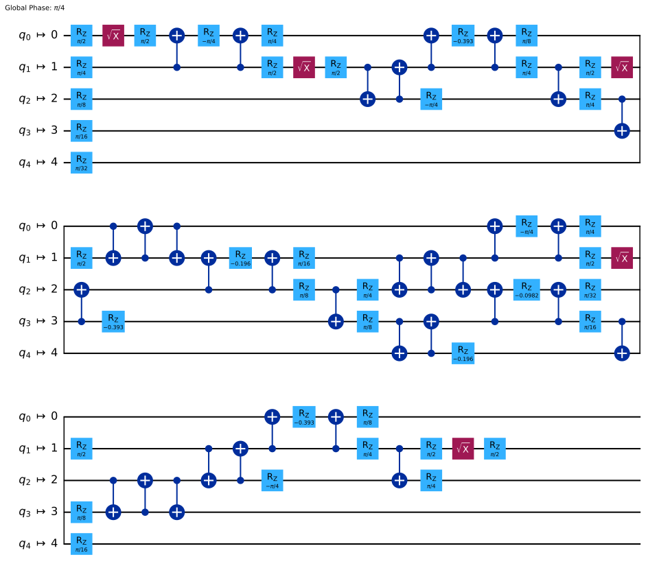
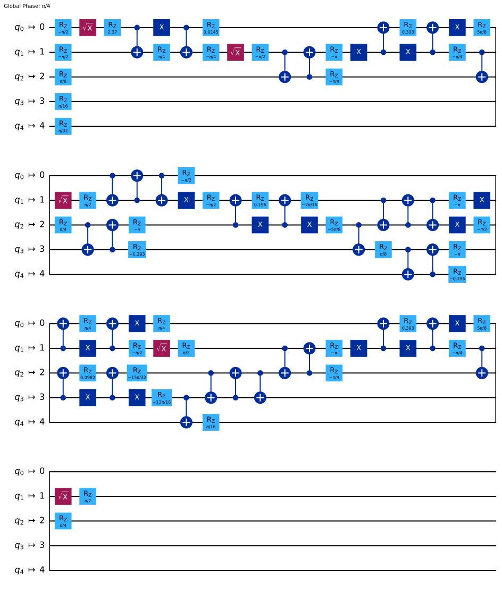
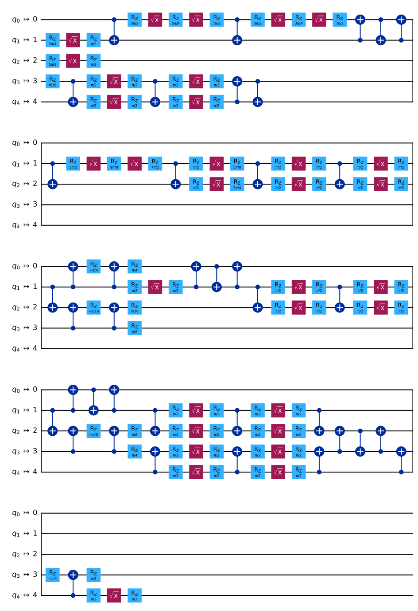
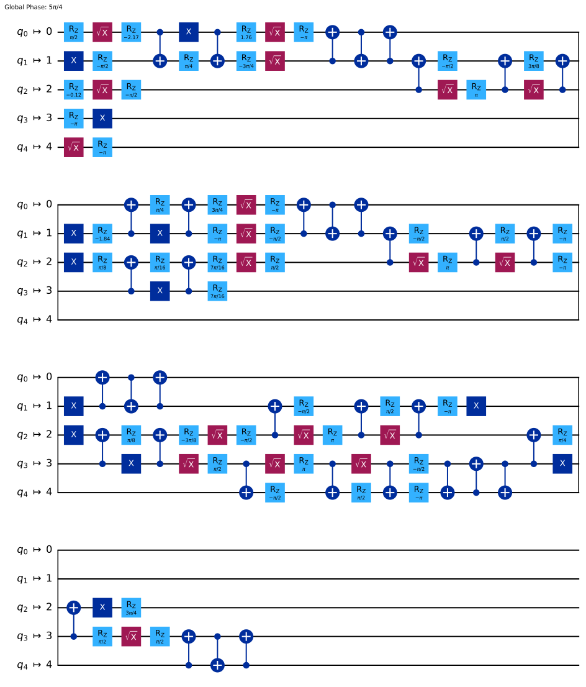

QFT gate savings that survive—or reverse
qft_5 and qe_qft_4 are five-qubit QFT-family benchmarks with opposite outcomes under the same pipeline. Both start from IBM New inputs and use hardware-independent Qiskit Level 3 logical optimization, followed by hardware Level 1 compilation for Manila. Both paths use physical sites 0–4, exact synthesis, and matched routing seeds 0–4.
The circuits have different unitaries in their supplied wire order. Their names identify separate benchmark inputs; qe_qft_4 occupies five qubits despite its suffix.
qft_5
20 more native gates after logical optimization.
qe_qft_4
28 fewer native gates after logical optimization.
Hardware outcomes
Positive values favor logical optimization. Values are medians of paired changes over five seeds. Total native gate savings are −20 for qft_5 and +28 for qe_qft_4 on every seed. Duration is baseline minus candidate in microseconds; fidelity is candidate minus baseline in percentage points.
| Circuit | Total gates saved | CX saved | Depth saved | SWAPs saved | Duration saved (µs) | Fidelity proxy gain (pp) |
|---|---|---|---|---|---|---|
qft_5 | -20 | +0 | -6 | +0 | -0.32 | -0.418 |
qe_qft_4 | +28 | +3 | +16 | +1 | -0.348 | +2.216 |
For qft_5, direct hardware compilation reaches 78 gates, while the logical pass produces 98 gates and hardware compilation retains 98. For qe_qft_4, the logical pass produces 104 gates, and hardware compilation finishes at 116, below the direct path’s 144. These counts locate the outcome; identifying the responsible rewrite requires tracing the passes.
Qiskit circuit renderings
Complete native circuits for Manila, seed 0. Expand either path and scroll horizontally to inspect it. Counts, depth, and routing SWAPs were checked against the published run.
qft_5
Direct compilation · 78 gates · 33 CX

After logical optimization · 98 gates · 33 CX

qe_qft_4
Direct compilation · 144 gates · 40 CX

After logical optimization · 116 gates · 37 CX

Fidelity is a product of historical gate-calibration fidelities. Duration is a target-based estimate. Download seed-level results.